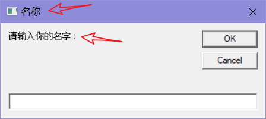

REM 和 ‘ : 表示本行注释
1 REM 输入并回显你的名字
2 '使用InputBox和Msgbox函数
3 Dim name,msg
4 msg="请输入你的名字:"
5 name=Inputbox(msg,"名称")
6 Msgbox(name) Dim用来声明一个变量，在VBS中，变量类型并不是那么重要，就是说VBS会帮你自动识别变量类型，而且变量在使用前不一定要先声明，程序会动态分配变量空间
dim name,msg (声明
namemsg两个变量)
msg=”The text message” (赋值)
Inputbox和Msgbox是VBS内建的函数，一个函数就相当于一个”黑箱”，有输入(参数)和输出(返回值)，一个函数可以有返回值也可以没有，可以有参数也可以没有
Inputbox的两个参数对应下面的两个箭头指向

dim a,b,m
a=inputbox("输入该物品的单价","价格",0)
b=inputbox("输入购买的数量","数量",0)
m=a*b
msgbox("总价是: "& m) \\可以使用&连接信息在编程中有一个有趣的运算符是”mod”，这个运算符叫做”取余运算符”，就是取得一次除法的余数
还有一个运算符是”^”(就是键盘“6”上面的小箭头)，他表示“乘幂”（或者是“方”）
Dim a,b,c
a=inputbox("a是:","输入半径")
b=Inputbox("b是:","输入半径")
c=(a+b)*2
Msgbox(c)
这个输入1、2时是24 可以这样修改
c=(int(a)+int(b))*2
for i = 1 To 31 ‘按指定的次数循环
excel操作
对象 (class):
- Application (Excel应用程序本身)
- Workbooks
- Worksheets
- Range (单元格)
方法 (members):
- Open
- Close
属性:
- Author
Dim (Dimension 尺寸)
Dim i As Integer ‘整数类型变量
As String
As Range ‘单元格对象
As Workbook ‘工作簿
As Worksheet ‘工作表
Workbooks：所有excel当前打开的工作簿（即所有打开的excel文件）
Workbook：Workbooks的成员
ActiveWorkbook：当前工作簿
ThisWorkbook：当前VB正在运行的工作簿
Worksheets：所有工作表。
可以通过下标或者名字引用Worksheet
例如引用第一个：Worksheets(1)，最后一个:Worksheets.Count，引用指定的：Worksheets(“shee1”)
Worksheet：Worksheets的成员
ActiveWorksheet：当前worksheet
Cells：Cells(row,column)代表单个单元格。
例如Cells(1,1),Cells(10,4)分别代表A1,D10
获取单元格的行号,列号(待测试)
Cells(1, 1) = Selection.Row
Cells(1, 2) = Selection.Column
selection = Range('b2').rowActiveCell：活动工作簿的活动单元格，或指定工作表的活动单元格
Range：指定区域，例如Range(“A1:H8”)
或者[A1],[A1:C5]的中括号形式
例子
获取外网IP地址,并邮件通知
这个脚本产生的背景是这样的:有一个条网线,有外网地址,但是不是固定.想要远程回里面内网的PC,于这个脚本产生了,让它定时提醒新的IP地址
'Set Wshshell = CreateObject("Wscript.shell")
times = 1
Do
Set ie=CreateObject("InternetExplorer.Application")
ie.Visible=false
ie.navigate "http://ip.cn/" '从ip.cn获取IP地址信息
Do
WSH.Sleep 500
Loop Until ie.readyState=4
str = replace(ie.Document.getElementByID("result").innertext,vbCrLf," ")
'msgbox str
Set reg = New RegExp '这里设置一个正则,用来提取出ip.cn返回信息中的ip地址
reg.Pattern = "(\d+\.){3}\d+"
ip = reg.Execute(str)(0)
'CreateObject("wscript.Shell").run "mshta vbscript:ClipBoardData.setData(""Text"","""&ip&""")(window.close)", 0, true '这里是将ip地址复制到剪贴板,这里并不需要
'msgbox "IP: " & ip & " Copy to Clipboard done!"
ie.quit '这里退出前面打开的ie
ipTemp = "127.0.0.1"
if ip <> ipTemp then
call sendMail()
end if
ipTemp = ip
WScript.Sleep 18800000
times = times + 1
Loop Until times > 1000
function sendMail ()
Set objEmail = CreateObject("CDO.Message")
objEmail.From = "xxxx@outlook.com"
objEmail.To = "xxxx@gmail.com"
objEmail.Subject = "The External IP had been changed!"
sendmsg = "New IP: " & ip & chr(13) & _
"
Update Time: " & now()
objEmail.Htmlbody = sendmsg 'htmlbody 是发送HTML格式的文本.
'下面是配置smtp服务器的信息,这里我以outlook为例.(默默说一句,微软对自家的东西兼容真心laji)
with objEmail.Configuration.Fields
.Item ("http://schemas.microsoft.com/cdo/configuration/sendusing") = 2
.Item ("http://schemas.microsoft.com/cdo/configuration/smtpserver") = "smtp.office365.com"
.Item ("http://schemas.microsoft.com/cdo/configuration/smtpserverport") = 25
.Item ("http://schemas.microsoft.com/cdo/configuration/smtpauthenticate") = 1
.Item ("http://schemas.microsoft.com/cdo/configuration/sendusername") = "xxxx@outlook.com"
.Item ("http://schemas.microsoft.com/cdo/configuration/sendpassword") = "xxxxx"
'.Item ("http://schemas.microsoft.com/cdo/configuration/sendtls") = True
.Item ("http://schemas.microsoft.com/cdo/configuration/smtpconnectiontimeout") = 60
.Item("http://schemas.microsoft.com/cdo/configuration/smtpusessl") = True
.Update
end with
objEmail.Send
end function
'vbs 目前 outlook 账号只能用ssl, 现在没有找到问题所在. 但是再outlook app 里面,可以指定使用 STARTTL,端口为587,所以上面那个tls注释掉了
'https://www.tachytelic.net/2018/12/email-vbscript-vba-office-365/Outlook 自动发送邮件
' sdt 为今日日期的字符串，比如 '2010-12-9'，可用于附件名字里
sdt = FormatDateTime(Date)
' 注意：以单引号'开头的行为注释
' receiptions 为收件人列表，多个收件人之间用分号隔开
' Subject 为邮件标题
' Body 为邮件正文
' Attachments 为附件列表，每个附件都需附带路径。
' autoSend 设置是否直接发送，设置为False时将停留在最后窗口，需手动按Outlook的发送按钮进行发送
receiptions = "xxxx@xxx.com; xxxx@gmail.com" '接收人
Subject = "This is a auto send email test " & sdt
Body = "Hi, team
" & _
" This is another line!
" & _
"another line" '
换行 &emsp 空格
'Attachments = Array("D:\report " & sdt & ".docx", "D:\report " & sdt & ".pdf")
autoSend = False
' 以下代码无需修改
Dim xOutLook
Dim xMail
On Error Resume Next
Set xOutLook = GetObject(, "Outlook.Application")
If xOutLook Is Nothing Then
Set xOutLook = CreateObject("Outlook.Application")
End If
Set xMail = xOutLook.CreateItem(olMailItem)
With xMail
.Display
Dim signature
signature = .HTMLBody
.To = receiptions
.Subject = Subject
.HTMLBody = Body
.Importance = olImportanceNormal ' 设置优先级, olImportanceHigh为高优先级
If IsArray(Attachments) Then
Dim attachment
For Each attachment In Attachments
.Attachments.Add attachment
Next
End If
'-----------------------------------------------------------------------
'添加附件的其他演示
set ofs = createobject("scripting.filesystemobject")
set ofolder = ofs.getfolder("C:\Users\bingfeng\Pictures\test")
set ofiles = ofolder.files
for each ofile in ofiles
'ofile = chr(34) & ofiles(i) & chr(34)
msgbox ofile.path
xmail.Attachments.Add ofile.path '一定要加 path 属性
next
'-----------------------------------------------------------------------
.HTMLBody = .HTMLBody & signature
If autoSend Then
.Send
Else
.Display
End If
End With判断用户是否有管理员权限
call checkIFAdmin()
msgbox checkifadmin()
Function checkIFAdmin()
On Error Resume Next
set wshshell = createobject("wscript.shell")
set fso = wscript.createobject("scripting.filesystemobject")
mySystemRoot = wshShell.ExpandEnvironmentStrings("%SystemRoot%")
testFolder = mySystemRoot & "\test"
'msgbox testfolder
Fso.CreateFolder(testFolder)
Wscript.sleep 2000
if fso.FolderExists(testFolder) then
checkIFAdmin = true
fso.deletefolder(testFolder)
else
checkIFAdmin = false
end if
End Function创建快捷方式
set WshShell=WScript.CreateObject("WScript.Shell") '第一行创建了一个Windows脚本宿主壳对象,
strDesktop=WshShell.SpecialFolders("AllUsersStartup") '第二行获取到桌面路径，
msgbox strDesktop
set oShellLink=WshShell.CreateShortcut(strDesktop & "\myShortCut.lnk") '第三行创建快捷方式lnk文件，
oShellLink.TargetPath="C:\temm\sum.vbs" '第四行设定快捷方式的目标路径，
'oShellLink.WindowStyle=1 '第五行设定快捷方式打开窗口的风格，
'oShellLink.Hotkey="CTRL+SHIFT+E" '第六行设定该快捷方式的快捷键，
'oShellLink.IconLocation="c:\mydocumentfolder\icon.ico,0" '第七行设定快捷方式的图标，
'oShellLink.Description="my shortcut descriptiion" '第八行设定快捷方式的描述信息，
'oShellLink.WorkingDirectory=strDesktop '第九行设定快捷方式的工作路径，
oShellLink.Save '第十行保存快捷方式。
'https://blog.csdn.net/MAILLIBIN/article/details/47110843